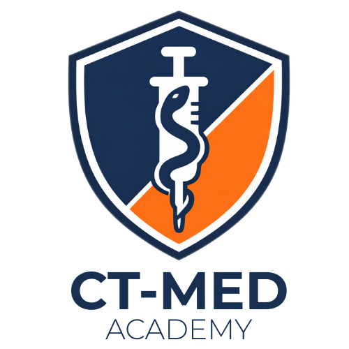

01
Internos e estudantes
Que querem construir segurança antes dos primeiros plantões.

Uma live direta ao ponto sobre Intubação em Sequência Rápida, com casos, raciocínio clínico passo a passo e aplicação no contexto da UPA e do pronto-socorro.
QUERO GARANTIR MINHA VAGA →Que querem construir segurança antes dos primeiros plantões.
Que precisam de um guia de raciocínio para atuar em cenários reais.
Que desejam revisar, atualizar e padronizar suas decisões.
Quando indicar, quando não indicar e como reconhecer prioridades.
Avaliação, pré-oxigenação, monitorização e otimização.
Escolhas fundamentadas na situação clínica.
Técnica, posicionamento e estratégia para melhorar o sucesso.
O que fazer quando a primeira tentativa falha.
Capnografia, sedação, ventilação e próximos passos.
Casos e interação com os professores.
Acesso posterior à gravação, conforme a oferta planejada.
Os pontos críticos antes das drogas.
Sequência de decisões em consulta rápida.
Doses e cenários de escolha.
Como reorganizar diante da falha na intubação.
Situações típicas da UPA e do PS.
Raciocínio passo a passo.
Condutas e pontos críticos.
Perguntas aos professores.
Anestesiologista • Professor de habilidades médicas • Ensino com simulação e prática.
Anestesiologista • Educador médico • Ensino prático aplicado à UPA e ao pronto-socorro.
Da indicação ao pós-intubação: um encontro focado em decisões práticas para a realidade da emergência.
Abertura de inscrições e checkout ainda não confirmados.
Tenho interesse ↗O botão abre um e-mail; não realiza pagamento.
O replay por 14 dias faz parte da oferta planejada, sujeita à confirmação.
Não. O conteúdo foi pensado para internos, recém-formados e plantonistas interessados em sistematizar o raciocínio.
A emissão de certificado ainda não foi definida.
A abertura das inscrições e o checkout serão comunicados quando confirmados.